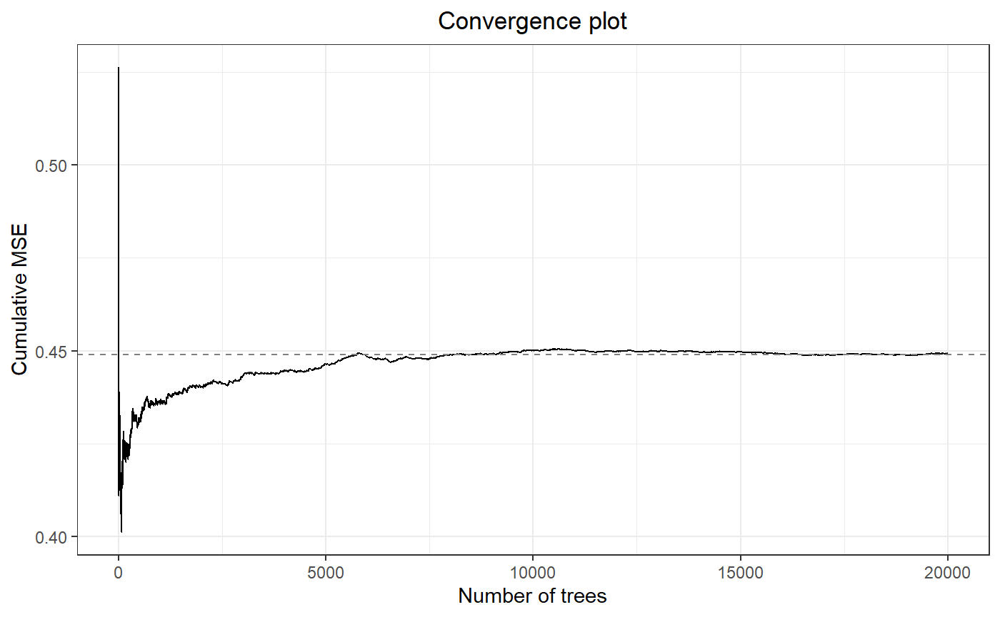

Introduction to metaforest
Caspar J. van Lissa
2020-07-16
Introduction_to_metaforest.RmdThis Vignette is based on the Open-Access book chapter:
Van Lissa, C. J. (2020). Small sample meta-analyses: Exploring heterogeneity using MetaForest. In R. Van De Schoot & M. Miočević (Eds.), Small Sample Size Solutions (Open Access): A Guide for Applied Researchers and Practitioners. CRC Press. https://www.crcpress.com/Small-Sample-Size-Solutions-Open-Access-A-Guide-for-Applied-Researchers/Schoot-Miocevic/p/book/9780367222222
Please refer to that chapter for a more in-depth explanation, and please cite the chapter.
One of the most common applications of meta-analysis in the social sciences is to summarize a body of literature on a specific topic. The literature typically covers similar research questions, investigated in different laboratories, using different methods, instruments, and samples. We typically do not know beforehand which of these moderators will affect the effect size found. MetaForest is a machine-learning based, exploratory approach to identify relevant moderators in meta-analysis. MetaForest is an adaptation of the random forests algorithm for meta-analysis: Weighted bootstrap sampling is used to ensure that more precise studies exert greater influence in the model building stage. These weights can be uniform (each study has equal probability of being selected into the bootstrap sample), fixed-effects (studies with smaller sampling variance have a larger probability of being selected), or random-effects based (studies with smaller sampling variance have a larger probability of being selected, but this advantage is diminished as the amount of between-studies heterogeneity increases). Internally, metaforest relies on the ranger R-package; a fast implementation of the random forests in C++.
Tutorial example
To illustrate how to use MetaForest, I will re-analyze the published work of Fukkink and Lont (2007), who have graciously shared their data. The authors examined the effectiveness of training on the competency of childcare providers. The sample is small, consisting of 78 effect sizes derived from 17 unique samples.
# Install the metaforest package. This needs to be done only once. install.packages("metaforest") # Then, load the metaforest package library(metaforest) # Assign the fukkink_lont data, which is included in # the metaforest package, to an object called "data" data <- fukkink_lont # Because MetaForest uses the random number generator (for bootstrapping), # we set a random seed so analyses can be replicated exactly. set.seed(62)
First, check model convergence by examining the cumulative mean squared out-of-bag prediction error (MSE) as a function of the number of trees in the model. When the MSE stabilizes, the model is said to have converged.
# Run model with many trees to check convergence check_conv <- MetaForest(yi~., data = data, study = "id_exp", whichweights = "random", num.trees = 20000) # Plot convergence trajectory plot(check_conv)
#> Warning in predict.ranger.forest(forest, data, predict.all, num.trees, type, :
#> Forest grown in ranger version <0.11.5, converting ...
This model has converged within approximately 5000 trees. Thus, we will use this number of trees for subsequent analyses. We now apply recursive pre-selection using the preselect function. Using preselect_vars, we retain only those moderators for which a 50% percentile interval of the variable importance metrics does not include zero.
# Model with 5000 trees for replication mf_rep <- MetaForest(yi~., data = data, study = "id_exp", whichweights = "random", num.trees = 5000) # Run recursive preselection, store results in object 'preselect' preselected <- preselect(mf_rep, replications = 100, algorithm = "recursive") # Plot the results plot(preselected) # Retain only moderators with positive variable importance in more than # 50% of replications retain_mods <- preselect_vars(preselected, cutoff = .5)
Tuning parameters
MetaForest has several “tuning parameters”, whose optimal values must be determined empirically: 1) the number of candidate variables considered at each split of each tree; 2) the minimum number of cases that must remain in a post-split group within each tree; 3) the type of weights (uniform, fixed-, or random-effects). The optimal values for these tuning parameters are commonly determined using cross-validation, with the well-known machine learning R-package caret.
Next, we tune the model using the R-package caret. The function ModelInfo_mf tells caret how to tune a MetaForest analysis. As tuning parameters, we consider all three types of weights (uniform, fixed-, and random-effects), number of candidate variables at each split from 2-6, and a minimum node size from 2-6. We select the model with smallest prediction error (RMSE) as final model, based on 10-fold clustered cross-validation.
# Load the caret library library(caret) # Set up 10-fold grouped (=clustered) CV grouped_cv <- trainControl(method = "cv", index = groupKFold(data$id_exp, k = 10)) # Set up a tuning grid for the three tuning parameters of MetaForest tuning_grid <- expand.grid(whichweights = c("random", "fixed", "unif"), mtry = 2:6, min.node.size = 2:6) # X should contain only retained moderators, clustering variable, and vi X <- data[, c("id_exp", "vi", retain_mods)] # Train the model mf_cv <- train(y = data$yi, x = X, study = "id_exp", # Name of the clustering variable method = ModelInfo_mf(), trControl = grouped_cv, tuneGrid = tuning_grid, num.trees = 5000) # Examine optimal tuning parameters mf_cv$results[which.min(mf_cv$results$RMSE), ]
#> whichweights mtry min.node.size RMSE Rsquared MAE RMSESD
#> 15 random 4 6 0.4823586 0.319665 0.4127035 0.1210057
#> RsquaredSD MAESD
#> 15 0.3700725 0.1321914The object returned by train already contains the final model, estimated with the best combination of tuning parameters. Consequently, we can proceed directly to reporting the results. First, we examine convergence again . Then, we examine the \(R^2_{oob}\).
Inspecting the results
# For convenience, extract final model final <- mf_cv$finalModel # Extract R^2_{oob} from the final model r2_oob <- final$forest$r.squared # Plot convergence plot(final) #> Warning in predict.ranger.forest(forest, data, predict.all, num.trees, type, : #> Forest grown in ranger version <0.11.5, converting ...
We can conclude that the model has converged, and has a positive estimate of explained variance in new data. Now, we proceed to interpreting the model findings. We will plot the variable importance, and partial dependence plots.
# Plot variable importance VarImpPlot(final)

# Sort the variable names by importance, so that the # partial dependence plots will be ranked by importance ordered_vars <- names(final$forest$variable.importance)[ order(final$forest$variable.importance, decreasing = TRUE)] # Plot partial dependence PartialDependence(final, vars = ordered_vars, rawdata = TRUE, pi = .95) #> Warning in predict.ranger.forest(forest, data, predict.all, num.trees, type, : #> Forest grown in ranger version <0.11.5, converting ... #> Warning in predict.ranger.forest(forest, data, predict.all, num.trees, type, : #> Forest grown in ranger version <0.11.5, converting ... #> Warning in predict.ranger.forest(forest, data, predict.all, num.trees, type, : #> Forest grown in ranger version <0.11.5, converting ... #> Warning in predict.ranger.forest(forest, data, predict.all, num.trees, type, : #> Forest grown in ranger version <0.11.5, converting ... #> Warning in predict.ranger.forest(forest, data, predict.all, num.trees, type, : #> Forest grown in ranger version <0.11.5, converting ... #> Warning in predict.ranger.forest(forest, data, predict.all, num.trees, type, : #> Forest grown in ranger version <0.11.5, converting ... #> Warning in predict.ranger.forest(forest, data, predict.all, num.trees, type, : #> Forest grown in ranger version <0.11.5, converting ...

Because this is an exploratory, non-parametric analysis, we cannot conclude whether any of these findings are “significant”. However, the PartialDependence function has two settings that help visualize the “importance” of a finding: rawdata, which plots the weighted raw data (studies with larger weights are plotted with a larger point size), thereby visualizing the variance around the mean prediction, and pi, which plots a (e.g., 95%) percentile interval of the predictions of individual trees in the model. This is not the same as a confidence interval, but it does show how variable or stable the model predictions are. This exploratory moderator analysis could be followed with a linear regression model, focusing only on relevant moderators identified by MetaForest.
More information
The following open-access book chapter has a more elaborate tutorial, including reporting guidelines:
Van Lissa, C. J. (2020). Small sample meta-analyses: Exploring heterogeneity using MetaForest. In R. Van De Schoot & M. Miočević (Eds.), Small Sample Size Solutions (Open Access): A Guide for Applied Researchers and Practitioners. CRC Press. https://www.crcpress.com/Small-Sample-Size-Solutions-Open-Access-A-Guide-for-Applied-Researchers/Schoot-Miocevic/p/book/9780367222222
Moreover, other applied examples of MetaForest analyses are available in published papers, some of which have open data and syntax. For instance, Curry and colleagues (2019) used MetaForest to examine moderators of the effect of acts of kindness on well-being, and found none. The full syntax and data are available on Github; https://github.com/cjvanlissa/kindness_meta-analysis. Secondly, Bonapersona and colleagues (2019) used MetaForest to identify moderators of the effect of early life adversity on the behavioral phenotype of animal models. Their full syntax and data are available at https://osf.io/ra947/. Thirdly, Gao and colleagues used MetaForest to examine moderators of the “mere ownership” effect: People’s tendency to value what they own more than what they do not own. There studies illustrate different applications of MetaForest, and different reporting practices.